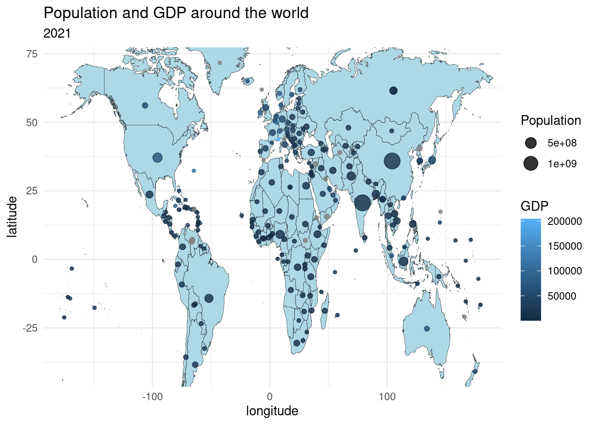
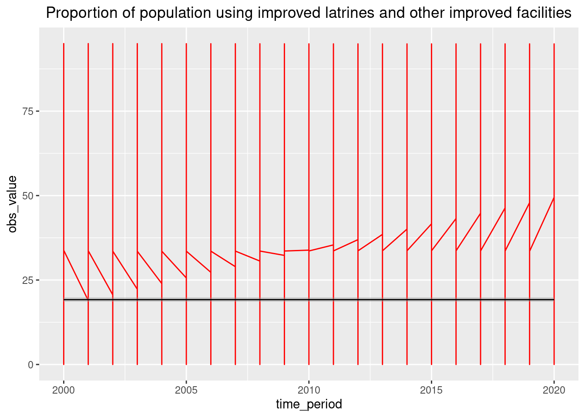
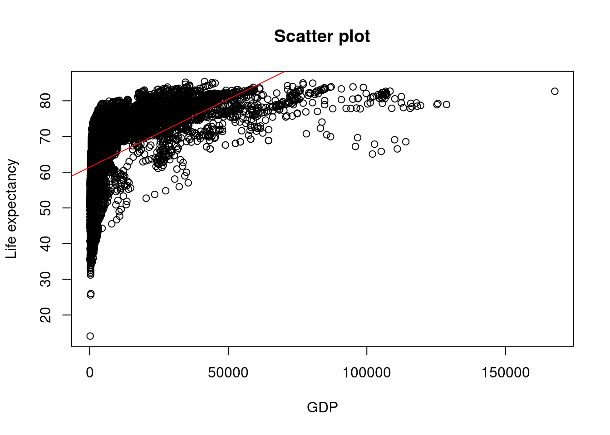
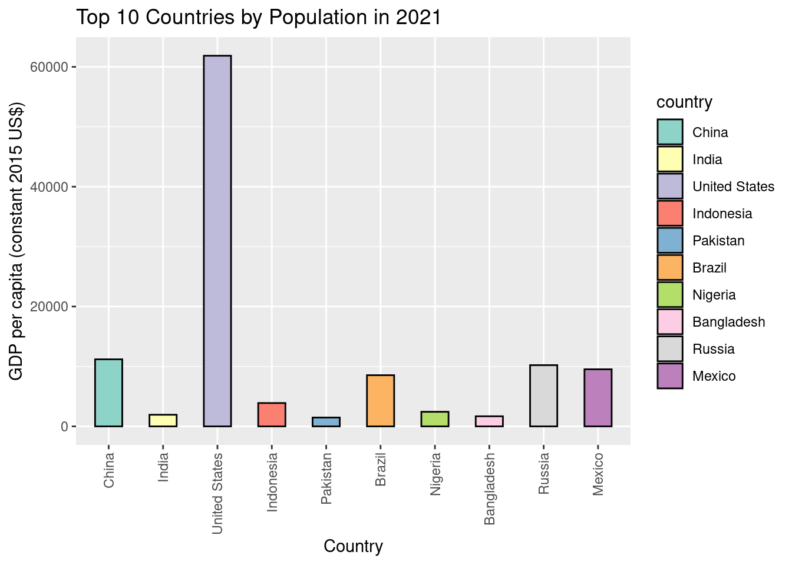

Quarto Assignment 2
Stats for Unicef Proportion of population using improved latrines and other improved facilities
According to the World Health Organization (WHO), improved sanitation facilities are those that hygienically separate human excreta from human contact, while unimproved sanitation facilities are those that do not.
This indicator is important because it provides information about the level of access to basic sanitation services in a given area. Lack of access to improved sanitation facilities can lead to the spread of diseases and can have a significant impact on public health.
Population and GDP around the world in 2021
The map represents the countries of the world using different shades of blue. The darker the shade, the higher the GDP of the country.
Each country is represented by a point on the map, with the size of the point corresponding to the population of the country.
The plot allows us to visualize the relationship between a country’s GDP and its population.
It helps us to identify countries with high GDP and population, such as China, India, and the United States.
It also highlights countries with lower GDP and population, such as many African countries.

Proportion of population using improved Latrines and other improved facilities
The proportion of the population using improved latrines and other improved facilities is a measure of the percentage of the population in a country that has access to proper sanitation facilities. This includes facilities that hygienically separate human excreta from human contact and safely dispose of the waste.
Usage of Improved facilities
Access to improved sanitation is essential for public health as it helps to prevent the spread of waterborne diseases, which can be deadly. According to the World Health Organization, inadequate sanitation is responsible for approximately 432,000 diarrheal deaths per year.
Improvements in sanitation can have a significant impact on both health and economic outcomes.
Better sanitation can reduce healthcare costs, improve educational outcomes by reducing absenteeism, and promote economic growth by increasing productivity and reducing the number of days lost to illness.
The proportion of the population using improved latrines and other improved facilities is therefore an important indicator of a country’s progress towards achieving sustainable development goals related to public health, education, and economic growth.

GDP and Life expectancy at Birth
GDP and life expectancy are two important indicators that provide insights into the well-being of a country’s population. GDP measures the economic output of a country, while life expectancy measures the average lifespan of its citizens. While there is no direct causal relationship between the two, there is a strong correlation between higher GDP and higher life expectancy. Countries with higher GDP tend to have better access to healthcare, education, and basic necessities such as clean water and food, which can contribute to longer lifespans. In contrast, countries with lower GDP often struggle to provide these basic necessities, which can lead to lower life expectancy rates. Therefore, investing in economic growth and development can have positive impacts on the health and well-being of a population.

GDP and Population in 2021
In 2021, the global GDP continued to grow, with several countries showing significant increases in their economic output. The United States remained the largest economy in the world, followed by China and Japan. Other countries, such as India and Brazil, also demonstrated notable economic growth. At the same time, the global population continued to increase, with several countries, including China and India, accounting for a significant portion of this growth. These countries also had the highest populations in the world. With such significant population growth, it is crucial for countries to prioritize sustainable economic growth that supports the well-being of their citizens while also considering the environmental impact of economic activities.
